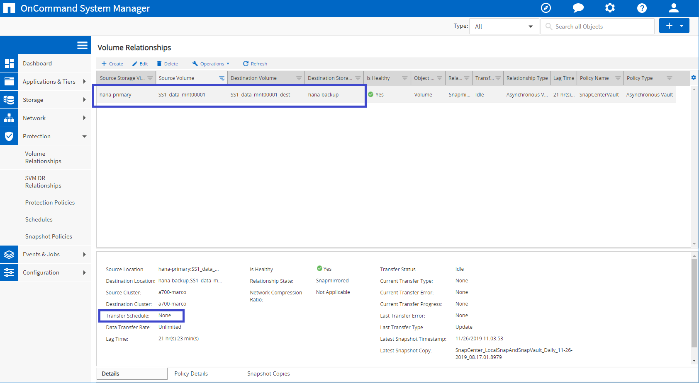
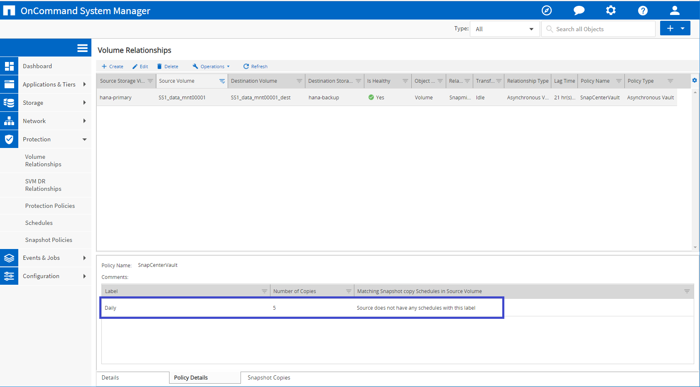
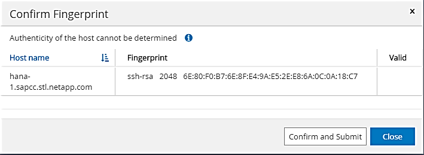
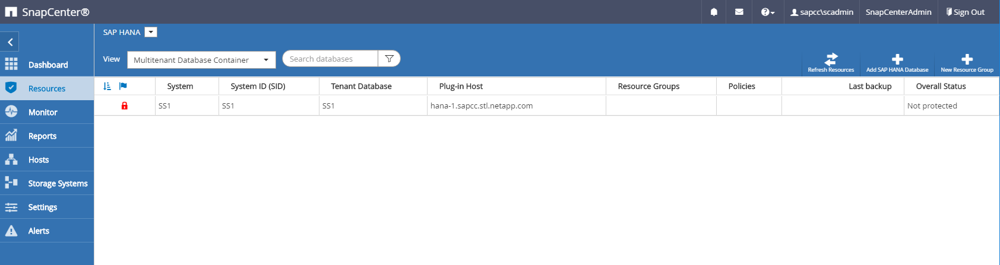
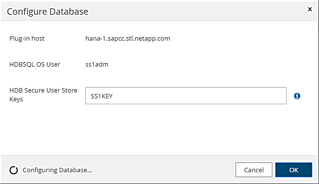
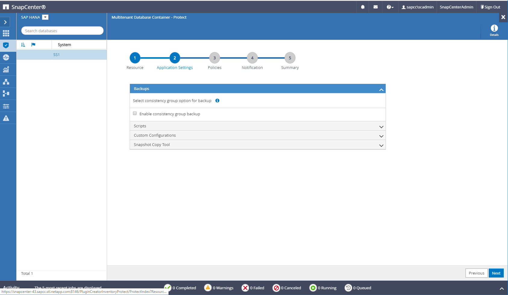
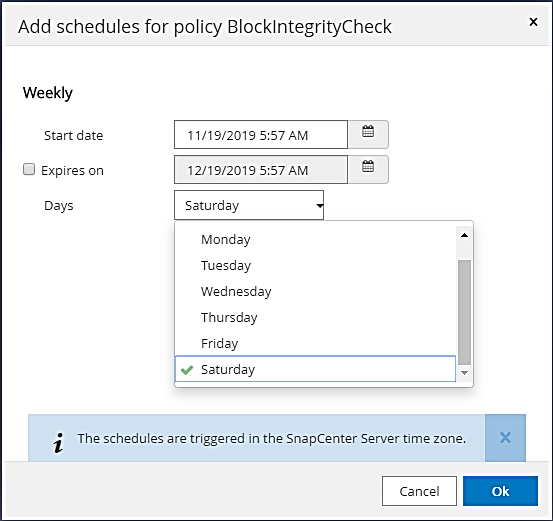

Solicitar cambios en el documento
Solicitar cambios en el documento Editar en GitHub
Editar en GitHub Guía del colaborador
Guía del colaboradorConfiguración específica de recursos de SnapCenter para backups de base de datos SAP HANA
Colaboradores
En esta sección se describen los pasos de configuración de dos configuraciones de ejemplo.
-
SS2.
-
Sistema de un solo inquilino SAP HANA MDC de un solo host mediante NFS para el acceso al almacenamiento
-
El recurso se configura manualmente en SnapCenter.
-
El recurso está configurado para crear backups de Snapshot locales y realizar comprobaciones de integridad de bloques para la base de datos de SAP HANA mediante un backup basado en archivos semanal.
-
-
SS1.
-
Sistema de un solo inquilino SAP HANA MDC de un solo host mediante NFS para el acceso al almacenamiento
-
El recurso se detecta automáticamente con SnapCenter.
-
El recurso se configura para crear backups Snapshot locales, replicar a un almacenamiento de backup externo mediante SnapVault y realizar comprobaciones de integridad de bloque para la base de datos SAP HANA mediante un backup semanal basado en archivos.
-
Las diferencias entre un sistema conectado A SAN, un único contenedor o un sistema de varios hosts se reflejan en los pasos de configuración o flujo de trabajo correspondientes.
Usuario de backup de SAP HANA y configuración de hdbuserstore
NetApp recomienda configurar un usuario de base de datos dedicado en la base de datos de HANA para ejecutar las operaciones de backup con SnapCenter. En el segundo paso, hay una clave de almacenamiento de usuario SAP HANA configurada para este usuario de backup, y esta clave de almacenamiento de usuario se usa en la configuración del plugin SAP HANA de SnapCenter.
La siguiente figura muestra SAP HANA Studio a través de la cual se puede crear el usuario de backup.

|
Los privilegios necesarios se modificaron con la versión HANA 2.0 SPS5: Administrador de backup, lectura de catálogo, administrador de backup de bases de datos y operador de recuperación de bases de datos. En versiones anteriores, el administrador de backup y la lectura de catálogo son suficientes. |
|
|
Para un sistema MDC de SAP HANA, el usuario debe crearse en la base de datos del sistema porque todos los comandos de backup para el sistema y las bases de datos de tenant se ejecutan mediante la base de datos del sistema. |

Debe configurarse una clave de almacén de usuarios en el host del complemento HANA, en el que estén instalados el complemento SAP HANA y el cliente SAP hdbsql.
Configuración del Userstore en el servidor SnapCenter que se utiliza como host de plugin para HANA central
Si el plug-in SAP HANA y el cliente SAP hdbsql están instalados en Windows, el usuario del sistema local ejecuta los comandos hdbsql y está configurado de forma predeterminada en la configuración de recursos. Dado que el usuario del sistema no es un usuario de inicio de sesión, la configuración del almacén de usuario debe realizarse con un usuario diferente y el -u <User> opción.
hdbuserstore.exe -u SYSTEM set <key> <host>:<port> <database user> <password>
|
|
El software SAP HANA hdbclient debe estar instalado primero en el host Windows. |
Configuración de Userstore en un host Linux separado que se utiliza como host de plugin para HANA central
Si el complemento SAP HANA y el cliente SAP hdbsql están instalados en un host Linux independiente, se utiliza el siguiente comando para la configuración del almacén de usuarios con el usuario definida en la configuración de recursos:
hdbuserstore set <key> <host>:<port> <database user> <password>
|
|
El software SAP HANA hdbclient debe estar instalado primero en el host Linux. |
Configuración del Userstore en el host de la base de datos HANA
Si el plugin de SAP HANA se implementa en el host de la base de datos HANA, se utiliza el siguiente comando para la configuración del almacén de usuarios con el <sid>adm usuario:
hdbuserstore set <key> <host>:<port> <database user> <password>
|
|
SnapCenter utiliza la <sid>adm Usuario para comunicarse con la base de datos HANA. Por lo tanto, la clave de almacenamiento de usuario debe configurarse utilizando el usuario <smid>adm' del host de la base de datos.
|
|
|
Normalmente, el software cliente hdbsql de SAP HANA se instala junto con la instalación del servidor de bases de datos. Si este no es el caso, el hdbclient debe instalarse primero. |
Configuración del Userstore en función de la arquitectura del sistema HANA
En una configuración de un solo inquilino de SAP HANA MDC, puerto 3<instanceNo>13 Es el puerto estándar para el acceso SQL a la base de datos del sistema y debe utilizarse en la configuración hdbuserstore.
Para una configuración de contenedor único de SAP HANA, el puerto 3<instanceNo>15 Es el puerto estándar para el acceso SQL al servidor de índices y debe utilizarse en la configuración hdbuserstore.
Para una configuración de varios hosts de SAP HANA, se deben configurar las claves de almacenamiento de usuario de todos los hosts. SnapCenter intenta conectarse a la base de datos utilizando cada una de las claves proporcionadas y, por lo tanto, puede funcionar independientemente de la conmutación al nodo de respaldo de un servicio SAP HANA a un host diferente.
Ejemplos de configuración de Userstore
En la configuración de laboratorio, se utiliza una puesta en marcha mixta de complemento SAP HANA. El plugin de HANA se instala en el servidor de SnapCenter para algunos sistemas HANA y se pone en marcha en servidores de base de datos HANA individuales para otros sistemas.
Sistema SAP HANA SS1, MDC de un solo inquilino, instancia 00
El plugin de HANA se implementó en el host de la base de datos. Por lo tanto, la clave debe configurarse en el host de la base de datos con el usuario ss1adm.
hana-1:/ # su - ss1adm ss1adm@hana-1:/usr/sap/SS1/HDB00> ss1adm@hana-1:/usr/sap/SS1/HDB00> ss1adm@hana-1:/usr/sap/SS1/HDB00> hdbuserstore set SS1KEY hana-1:30013 SnapCenter password ss1adm@hana-1:/usr/sap/SS1/HDB00> hdbuserstore list DATA FILE : /usr/sap/SS1/home/.hdb/hana-1/SSFS_HDB.DAT KEY FILE : /usr/sap/SS1/home/.hdb/hana-1/SSFS_HDB.KEY KEY SS1KEY ENV : hana-1:30013 USER: SnapCenter KEY SS1SAPDBCTRLSS1 ENV : hana-1:30015 USER: SAPDBCTRL ss1adm@hana-1:/usr/sap/SS1/HDB00>
Sistema SAP HANA MS1, multi-host MDC single tenant, instancia 00
Para HANA de varios sistemas host, se requiere un host de complemento centralizado. En nuestra configuración, utilizamos SnapCenter Server. Por lo tanto, la configuración del almacén de usuario debe realizarse en el servidor SnapCenter.
hdbuserstore.exe -u SYSTEM set MS1KEYHOST1 hana-4:30013 SNAPCENTER password hdbuserstore.exe -u SYSTEM set MS1KEYHOST2 hana-5:30013 SNAPCENTER password hdbuserstore.exe -u SYSTEM set MS1KEYHOST3 hana-6:30013 SNAPCENTER password C:\Program Files\sap\hdbclient>hdbuserstore.exe -u SYSTEM list DATA FILE : C:\ProgramData\.hdb\SNAPCENTER-43\S-1-5-18\SSFS_HDB.DAT KEY FILE : C:\ProgramData\.hdb\SNAPCENTER-43\S-1-5-18\SSFS_HDB.KEY KEY MS1KEYHOST1 ENV : hana-4:30013 USER: SNAPCENTER KEY MS1KEYHOST2 ENV : hana-5:30013 USER: SNAPCENTER KEY MS1KEYHOST3 ENV : hana-6:30013 USER: SNAPCENTER KEY SS2KEY ENV : hana-3:30013 USER: SNAPCENTER C:\Program Files\sap\hdbclient>
Configuración de la protección de datos para un almacenamiento de backup externo
Para que SnapCenter pueda gestionar las actualizaciones de replicación, es necesario ejecutar la configuración de la relación de protección de datos y la transferencia de datos inicial.
En la siguiente figura, se muestra la relación de protección configurada para el sistema SAP HANA SS1. Con nuestro ejemplo, el volumen de origen SS1_data_mnt00001 En la máquina virtual SVM hana-primary Se replica en la SVM hana-backup y el volumen objetivo SS1_data_mnt00001_dest.
|
|
La programación de la relación debe establecerse en ninguna, ya que SnapCenter activa la actualización de SnapVault. |

La siguiente figura muestra la política de protección. La política de protección utilizada para la relación de protección define la etiqueta de SnapMirror, así como la retención de backups en el almacenamiento secundario. En nuestro ejemplo, la etiqueta utilizada es Daily, y la retención se establece en 5.
|
|
La etiqueta de SnapMirror en la política que se va a crear debe coincidir con la etiqueta definida en la configuración de la política de SnapCenter. Para obtener más información, consulte “[Normativa sobre backups snapshot diarios con replicación SnapVault].” |
|
|
La retención de backups en el almacenamiento de backups fuera de las instalaciones se define en la política y está controlada por ONTAP. |

Configuración manual de recursos de HANA
Esta sección describe la configuración manual de los recursos SAP HANA SS2 y MS1.
-
SS2 es un sistema de un solo inquilino de MDC de un solo host
-
MS1 es un sistema de un solo inquilino de MDC de varios hosts.
-
En la pestaña Resources, seleccione SAP HANA y haga clic en Add SAP HANA Database.
-
Introduzca la información para configurar la base de datos SAP HANA y haga clic en Next.
Seleccione el tipo de recurso en nuestro ejemplo, Multitenant Database Container.
Para un sistema de contenedor único HANA, se debe seleccionar el tipo de recurso Single Container. El resto de pasos de configuración son idénticos. Para nuestro sistema SAP HANA, el SID es SS2.
El host del plugin de HANA en nuestro ejemplo es el servidor SnapCenter.
La clave hdbuserstore debe coincidir con la clave que se configuró para la base de datos HANA SS2. En nuestro ejemplo es SS2KEY.

Para un sistema SAP HANA de varios hosts, debe incluir las claves hdbuserstore para todos los hosts, como se muestra en la siguiente figura. SnapCenter intentará conectarse con la primera clave de la lista y continuará con el otro caso, por si la primera clave no funcione. Esto es necesario para admitir la conmutación por error de HANA en un sistema de varios hosts con hosts de trabajo y en espera. 
-
Seleccione los datos requeridos para el sistema de almacenamiento (SVM) y el nombre del volumen.

Para obtener una configuración SAN Fibre Channel, también es necesario seleccionar la LUN.
Para un sistema host múltiple SAP HANA, se deben seleccionar todos los volúmenes de datos del sistema SAP HANA, como se muestra en la siguiente figura. 
Se muestra la pantalla de resumen de la configuración de recursos.
-
Haga clic en Finish para añadir la base de datos SAP HANA.

-
Cuando finalice la configuración del recurso, realice la configuración de la protección de recursos como se describe en la sección “Configuración de protección de recursos.”
-
Detección automática de las bases de datos HANA
En esta sección se describe la detección automática del recurso SS1 de SAP HANA (sistema de un solo inquilino MDC de host único con NFS). Todos los pasos descritos son idénticos para un único contenedor HANA, sistemas de varios inquilinos MDC de HANA y un sistema HANA que utiliza SAN Fibre Channel.
|
|
El plugin de SAP HANA requiere Java de 64 bits, versión 1.8. Java se debe instalar en el host antes de que se ponga en marcha el plugin de SAP HANA. |
-
En la pestaña del host, haga clic en Add.
-
Proporcione información del host y seleccione el plugin de SAP HANA que se va a instalar. Haga clic en Submit.

-
Confirme la huella.

La instalación del plugin de HANA y el plugin de Linux se inicia de forma automática. Cuando termina la instalación, la columna de estado del host muestra ejecutando. La pantalla también muestra que el plugin de Linux se ha instalado junto con el plugin de HANA.

Después de la instalación del plugin, el proceso de detección automática del recurso HANA se inicia de forma automática. En la pantalla Recursos, se crea un recurso nuevo, que se Marca como bloqueado con el icono de candado rojo.
-
Seleccione el recurso y haga clic en él para continuar con la configuración.
También es posible activar el proceso de detección automática manualmente en la pantalla Resources, haciendo clic en Refresh Resources. 
-
Proporcione la clave de almacenamiento de usuarios para la base de datos HANA.

El proceso de detección automática de segundo nivel comienza en el cual se detectan los datos de inquilinos y la información sobre la huella de almacenamiento.
-
Haga clic en Details para revisar la información de configuración de los recursos HANA en la vista de topología de los recursos.


Cuando finalice la configuración de los recursos, la configuración de protección de recursos debe ejecutarse tal como se describe en la sección siguiente.
Configuración de protección de recursos
En esta sección se describe la configuración de protección de recursos. La configuración de la protección de recursos es la misma, independientemente de que el recurso se detecte automáticamente o se configure manualmente. También es idéntico para todas las arquitecturas de HANA, hosts únicos o múltiples, sistemas de un solo contenedor o MDC.
-
En la pestaña Resources, haga doble clic en el recurso.
-
Configure un formato de nombre personalizado para la copia de Snapshot.
NetApp recomienda utilizar un nombre de copia de Snapshot personalizado para identificar fácilmente qué backups se han creado con qué tipo de normativa y programación. Al añadir el tipo de programación al nombre de la copia de Snapshot, es posible distinguir entre backups programados y bajo demanda. La schedule namela cadena de backups bajo demanda está vacía, mientras que las copias de seguridad programadas incluyen la cadenaHourly,Daily,or Weekly.En la configuración mostrada en la siguiente figura, los nombres de backup y copia Snapshot tienen el siguiente formato:
-
Backup programado por hora:
SnapCenter_LocalSnap_Hourly_<time_stamp> -
Backup diario programado:
SnapCenter_LocalSnapAndSnapVault_Daily_<time_stamp> -
Backup por horas bajo demanda:
SnapCenter_LocalSnap_<time_stamp> -
Backup diario bajo demanda:
SnapCenter_LocalSnapAndSnapVault_<time_stamp>
Aunque se define una retención para backups bajo demanda en la configuración de políticas, el mantenimiento solo se realiza cuando se ejecuta otro backup bajo demanda. Por lo tanto, los backups bajo demanda suelen eliminarse manualmente en SnapCenter para asegurarse de que estos backups también se eliminan en el catálogo de backup de SAP HANA y que el mantenimiento del backup de registros no se basa en un backup antiguo bajo demanda.

-
-
No es necesario realizar ningún ajuste específico en la página Configuración de la aplicación. Haga clic en Siguiente.

-
Seleccione las políticas que desea añadir al recurso.

-
Defina la programación para la política LocalSnap (en este ejemplo, cada cuatro horas).

-
Defina la programación para la política LocalSnapAndSnapVault (en este ejemplo, una vez por día).

-
Defina el programa de la política de comprobación de integridad de bloques (en este ejemplo, una vez a la semana).

-
Proporcione información acerca de las notificaciones por correo electrónico.

-
En la página Summary, haga clic en Finish.

-
Ahora los backups bajo demanda se pueden crear en la página Topology. Los backups programados se ejecutan según la configuración.

Pasos de configuración adicionales para entornos SAN Fibre Channel
En función de la versión de HANA y la puesta en marcha del complemento HANA, se requieren pasos adicionales de configuración para entornos en los que los sistemas SAP HANA utilizan Fibre Channel y el sistema de archivos XFS.
|
|
Estos pasos de configuración adicionales solo son necesarios para recursos HANA, que se configuran manualmente en SnapCenter. También es necesario para las versiones de HANA 1.0 y las versiones de HANA 2.0 hasta SPS2. |
Cuando SnapCenter activa un punto de guardado de backup de HANA en SAP HANA, SAP HANA escribe los archivos ID de snapshot para cada cliente y servicio de base de datos como último paso (por ejemplo, /hana/data/SID/mnt00001/hdb00001/snapshot_databackup_0_1). Estos archivos forman parte del volumen de datos del almacenamiento y, por lo tanto, forman parte de la copia snapshot de almacenamiento. Este archivo es obligatorio cuando se realiza una recuperación en una situación en la que se restaura el backup. Debido al almacenamiento en caché de metadatos con el sistema de archivos XFS en el host Linux, el archivo no es visible inmediatamente en la capa de almacenamiento. La configuración XFS estándar para el almacenamiento en caché de metadatos es de 30 segundos.
|
|
Con HANA 2.0 SPS3, SAP cambió la operación de escritura de estos archivos de ID de Snapshot a de forma síncrona para que el almacenamiento en caché de metadatos no surja ningún problema. |
|
|
Con SnapCenter 4.3, si el plugin de HANA se implementa en el host de base de datos, el plugin de Linux ejecuta una operación de vaciado de sistema de archivos en el host antes de activar la Snapshot de almacenamiento. En este caso, el almacenamiento en caché de metadatos no es un problema. |
En SnapCenter, debe configurar un postquiesce Comando que espera hasta que la caché de metadatos XFS se vacía en la capa de disco.
La configuración real del almacenamiento en caché de metadatos se puede comprobar usando el siguiente comando:
stlrx300s8-2:/ # sysctl -A | grep xfssyncd_centisecs fs.xfs.xfssyncd_centisecs = 3000
NetApp recomienda utilizar un tiempo de espera que duplique el valor del fs.xfs.xfssyncd_centisecs parámetro. Dado que el valor predeterminado es 30 segundos, establezca el comando sleep en 60 segundos.
Si el servidor SnapCenter se utiliza como host de complemento HANA central, se puede utilizar un archivo de lotes. El archivo por lotes debe tener el siguiente contenido:
@echo off waitfor AnyThing /t 60 2>NUL Exit /b 0
El archivo por lotes se puede guardar, por ejemplo, como C:\Program Files\NetApp\Wait60Sec.bat. En la configuración de protección de recursos, el archivo por lotes debe agregarse como comando Post Quiesce.
Si un host de Linux separado se utiliza como host del plugin de HANA central, debe configurar el comando /bin/sleep 60 Como el comando Post Quiesce en la interfaz de usuario de SnapCenter.
La siguiente figura muestra el comando Post Quiesce dentro de la pantalla de configuración de protección de recursos.